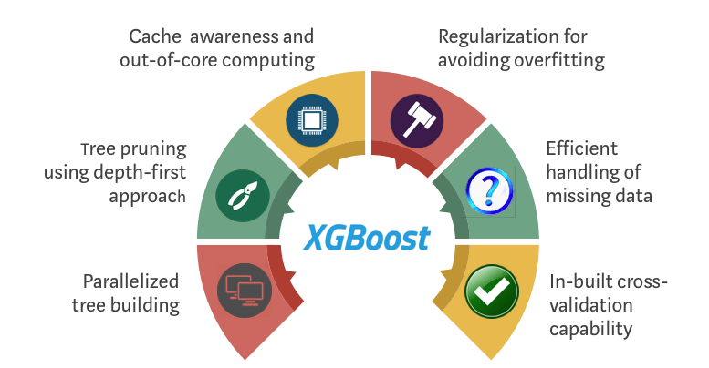
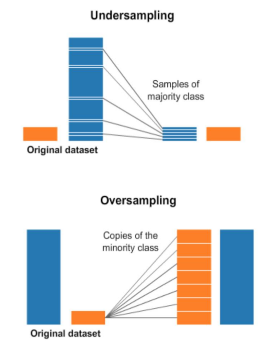

Mata Kuliah: Machine Learning
XGBoost dan Isu Dalam Pemodelan Klasifikasi
XGBoost
Pendahuluan
- XGBoost (eXtreme Gradient Boosting) adalah algoritma ensemble (seperti Random Forest) yang powerful berbasis gradient boosting
- XGBoost merupakan implementasi yang dioptimasi dari Gradient Boosting Decision Trees (GBDT)
- Dikenal karena performa dan kecepatan tinggi dalam kompetisi data science (Kaggle)
- Mampu menangani berbagai jenis masalah: klasifikasi dan regresi
- Efektif dalam menangani data berdimensi tinggi dan dataset besar
- Menyediakan paralelisasi dan distribusi komputasi yang efisien
- Memiliki kemampuan penanganan missing values dan regularisasi untuk mencegah overfitting
Model Dasar XGBoost

XGBoost membangun model secara bertahap. Setiap model baru (tree) berusaha memperbaiki kesalahan dari model sebelumnya.
Model Dasar XGBoost
Fungsi objektif XGBoost: \[ \text{Obj} = \sum_{i=1}^n L(y_i, \hat{y}_i) + \sum_{k=1}^K \Omega(f_k) \]
Dimana:
\(L\) adalah fungsi loss
\(\Omega\) adalah term regularisasi
\(f_k\) adalah model tree ke-k
\(\hat{y}_i\) adalah prediksi untuk instance i
Interpretabilitas pada XGBoost
XGBoost menyediakan beberapa cara untuk memahami model:
- Feature Importance: Menunjukkan kontribusi relatif setiap fitur dalam model
- Gain: Peningkatan performa ketika fitur digunakan dalam split
- Cover: Jumlah contoh yang terkena fitur tersebut
- Frequency: Berapa kali fitur digunakan dalam model
- SHAP (SHapley Additive exPlanations): Metode yang lebih canggih untuk menjelaskan prediksi individual
- Menghitung kontribusi setiap fitur terhadap prediksi individual
- Mempertimbangkan interaksi antar fitur
- Visualisasi pohon keputusan: Memungkinkan inspeksi secara manual terhadap pohon-pohon individual
Algoritma Pembelajaran XGBoost
XGBoost menggunakan pendekatan additive training:
\[\hat{y}_i^{(t)} = \hat{y}_i^{(t-1)} + \eta f_t(x_i)\]
Dimana: (1) \(\hat{y}_i^{(t)}\) adalah prediksi pada iterasi t (2) \(\hat{y}_i^{(t-1)}\) adalah prediksi pada iterasi sebelumnya (3) \(\eta\) adalah learning rate (4) \(f_t\) adalah model tree baru yang ditambahkan
XGBoost mengoptimalkan fungsi objektif menggunakan ekspansi Taylor orde kedua:
\[\text{Obj}^{(t)} \approx \sum_{i=1}^n [g_i f_t(x_i) + \frac{1}{2} h_i f_t^2(x_i)] + \Omega(f_t)\]
Dimana: (1) \(g_i\) adalah gradien pertama dari fungsi loss (2) \(h_i\) adalah gradien kedua dari fungsi loss
Bagging vs Boosting
Bagging

Sumber: blog.dailydoseofds.com
Bagging vs Boosting
Boosting

Sumber: blog.dailydoseofds.com
Algoritma Pembelajaran XGBoost
Komponen Kunci XGBoost
XGBoost memiliki beberapa komponen penting yang berkontribusi pada performanya:
- Approximate Greedy Algorithm: Algoritma efisien untuk menemukan split optimal
- Weighted Quantile Sketch: Teknik untuk menemukan split points pada data terdistribusi
- Cache-Aware Access: Optimasi penggunaan memori untuk kinerja yang lebih baik
- Blocks for Out-of-Core Computation: Kemampuan menangani dataset yang lebih besar dari RAM
- Sistem Regularisasi: Mencegah overfitting dengan penalti kompleksitas model
Hyperparameter XGBoost
XGBoost (via scikit-learn) memiliki banyak hyperparameter yang dapat dioptimasi:
Booster Parameters:
n_estimators: Jumlah pohon (default=100)max_depth: Kedalaman maksimum tiap pohon (default=6)learning_rate: Laju pembelajaran (default=0.3)gamma: Minimum loss reduction untuk split (default=0)
Regularization Parameters:
reg_alpha: Regularisasi L1 (default=0)reg_lambda: Regularisasi L2 (default=1)min_child_weight: Minimum sum of instance weight needed in child (default=1)
Hyperparameter XGBoost
Sampling Parameters:
subsample: Rasio sampel data untuk tiap tree (default=1)colsample_bytree: Rasio kolom sampel untuk tiap tree (default=1)
Lainnya:
objective: Fungsi objektif (‘binary:logistic’, ‘multi:softmax’, dll)eval_metric: Metrik evaluasi (‘error’, ‘auc’, dll)early_stopping_rounds: Berhenti jika performa tidak meningkat
Parameter ini dapat dioptimasi menggunakan GridSearchCV atau RandomizedSearchCV
Material Tambahan
Isu Dalam Pemodelan Klasifikasi
Poin-Poin Utama
Jenis variabel prediktor
Fungsi pemisah antar kelas: Linear vs Non-Linear Separation
Optimasi Hyperparameter
Class Imbalance
Jenis Variabel Prediktor
| Metode | Cocok Untuk |
|---|---|
| K-NN, SVM | Numerik Semua |
| Bayesian Classifier | Kategorik Semua |
| Regresi Logistik, Classification Tree, XGBoost, Neural Network | Campuran |
Bentuk Fungsi Pemisah Antar Kelas
- Linear
- Regresi Logistik
- (Basic) SVM
- Non Linear
- Tree, Forest, Boosting
- Kernel SVM
- Neural Network
- K-NN
Hyperparameter
| Model | Hyperparameter yang Perlu Dioptimasi |
|---|---|
| Regresi Logistik | Penalized parameter |
| k-NN | k (banyaknya tetangga) |
| Classification Tree | minsplit, maxdepth, cp |
| Random Forest | banyak variabel yang diperiksa per split, jumlah pohon |
| Gradient Boosting | learning rate, jumlah pohon (iterasi) |
| Support Vector Machine | jenis kernel, koef kernel, cost of error |
| Neural Network | epoch, learning rate |
Optimasi Hyperparameter
Validasi dan Validasi Silang
Parsimonous vs Complex Model, Underfit vs Overfit
Pencarian hyperparameter optimal
- Random Search
- Grid Search
Class Imbalance
- Kelas mayoritas sangat dominan dibanding kelas minoritas
- Prediksi kelas minoritas umumnya kurang akurat
- Kelas minoritas biasanya penting dan menjadi fokus analisis
Strategi Penanganan Class Imbalance
- Penyeimbangan kelas pada data
- Penyesuaian algoritma pemodelan
- Gabungan keduanya
Penyeimbangan Kelas
- Random oversampling
- Random undersampling, Edited Nearest Neighborhood Undersampling
- Membuat data sintetis: SMOTE, Adasyn, Safe-Level SMOTE, Borderline SMOTE
Random Under/Over-Sampling

- Random Undersampling
- Gunakan semua amatan kelas minoritas
- Gunakan sebagian amatan kelas mayoritas secara acak
- Random Oversampling
- Gunakan semua amatan kelas mayoritas
- Duplikasi amatan kelas mayoritas secara acak (sampling with replacement)